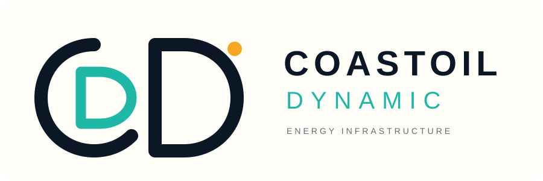
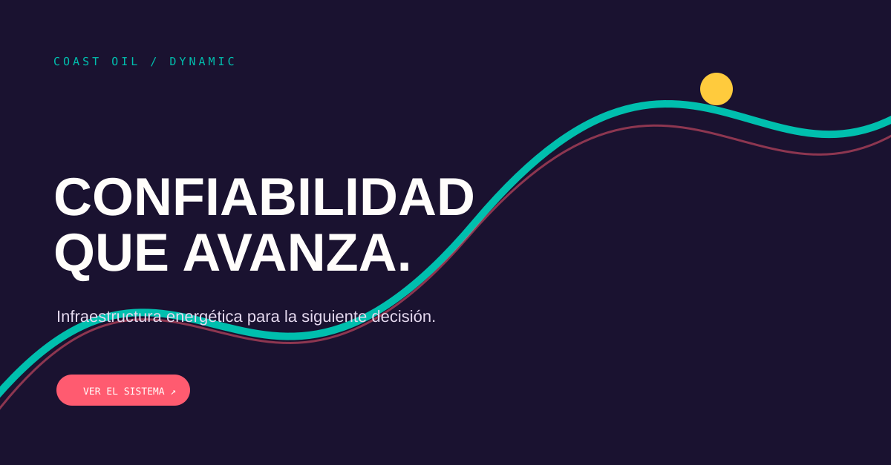
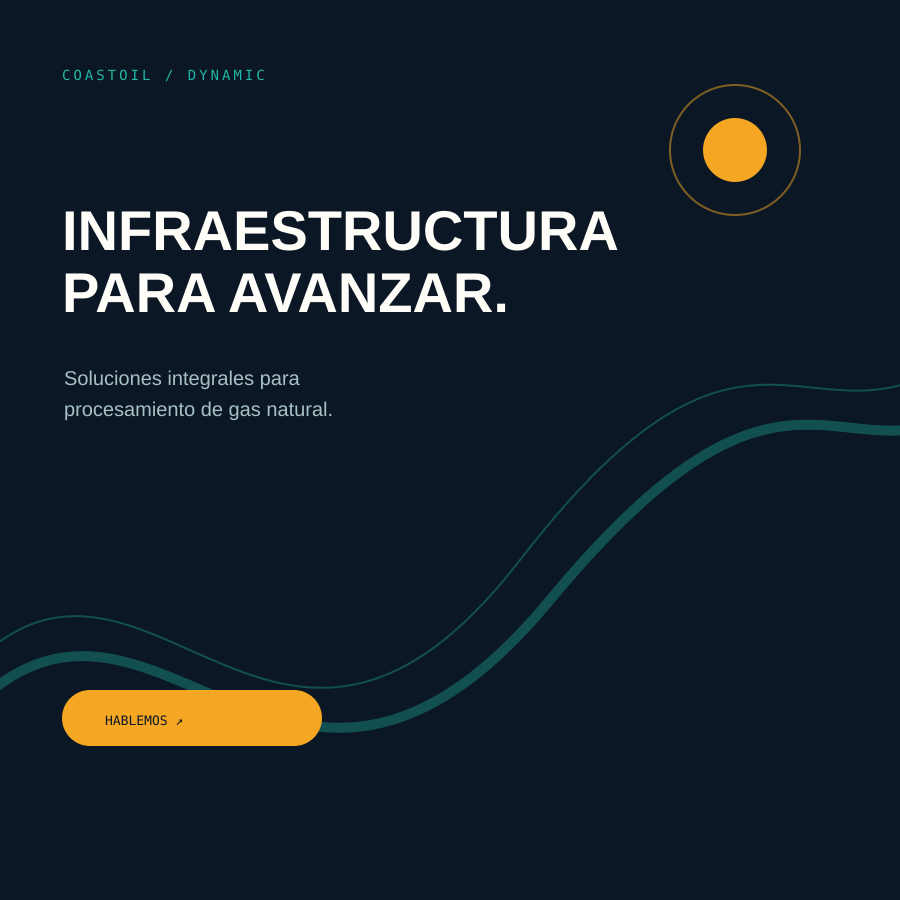
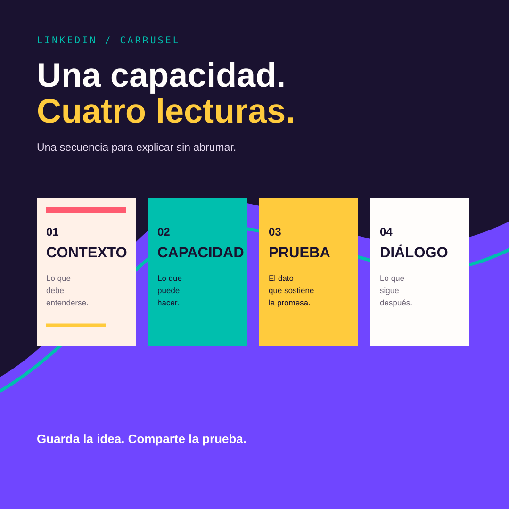
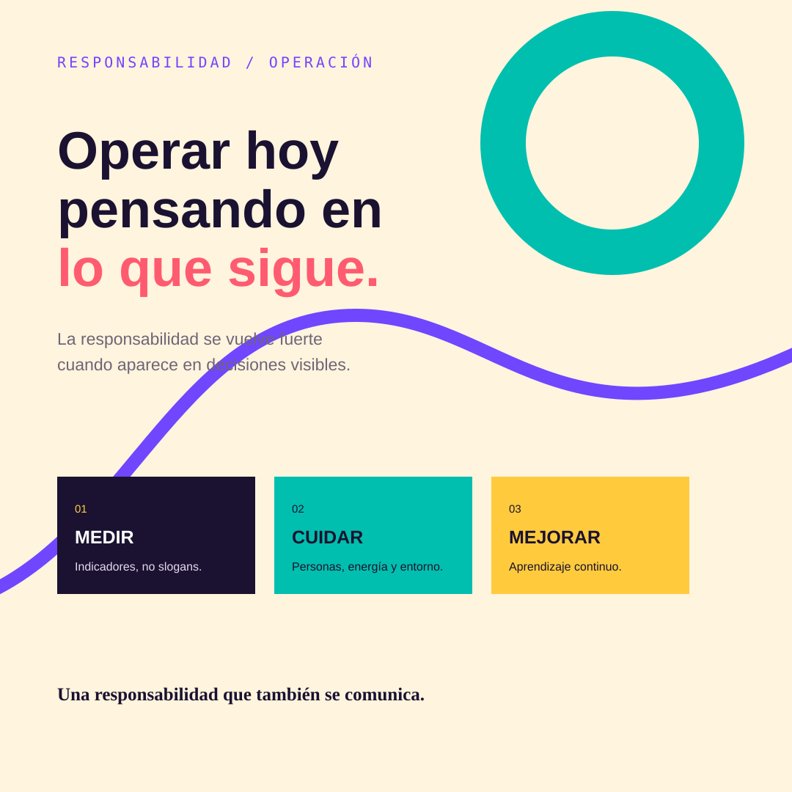
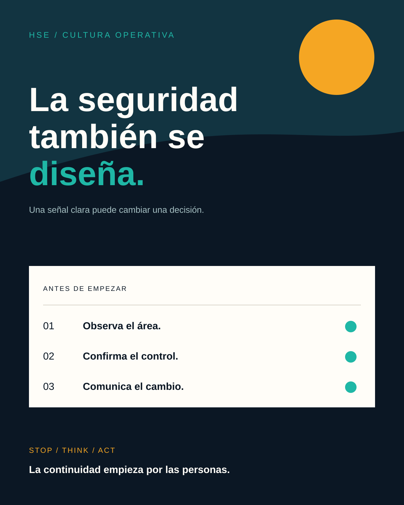
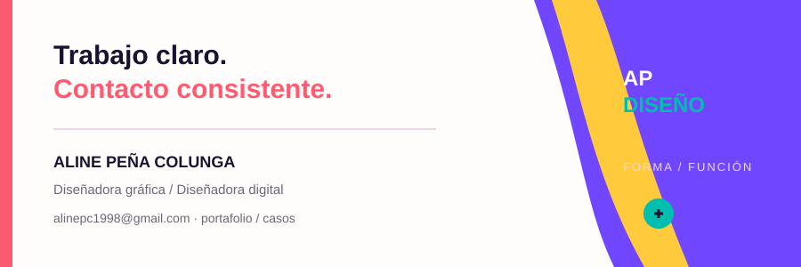

Infraestructura energética integral
Coastoil Dynamic comunica compresión, tratamiento, deshidratación, eliminación de hidrocarburos y Gas LP dentro de una misma cadena de valor.
Lectura de marca: rigor + continuidad.CONCEPT CASE · COASTOIL DYNAMIC
Sistema visual y de contenidos para comunicar infraestructura energética B2B con más claridad, autoridad técnica y una narrativa humana.

01 / CREATIVE BRIEF
La oportunidad no era llenar la pantalla de petróleo, maquinaria y efectos. Era construir confianza: explicar la capacidad técnica con una jerarquía visual que un decisor pueda recorrer rápido.
Coastoil Dynamic comunica compresión, tratamiento, deshidratación, eliminación de hidrocarburos y Gas LP dentro de una misma cadena de valor.
Lectura de marca: rigor + continuidad.Dirección, ingeniería, operaciones, compras y socios estratégicos necesitan evidencia, no solo una estética “industrial”.
Diseño: datos visibles + lenguaje claro.El sistema usa líneas de flujo como recurso visual para conectar proyectos, procesos, seguridad y sustentabilidad.
Promesa: confianza que avanza.02 / BRAND SYSTEM
La propuesta combina una base técnica y sobria con un color señal para marcar movimiento, datos y llamados a la acción.

La paleta evita el cliché de “azul corporativo genérico” y conserva contraste para piezas técnicas.
03 / CAMPAIGN KIT
Las piezas están diseñadas como una campaña modular: cada formato tiene una función, un mensaje y una métrica de aprendizaje.

Banner corporativo para presentar capacidad, operación y enfoque responsable en una sola lectura.

Tarjeta para explicar un proyecto sin sacrificar el dato duro ni la legibilidad.

Portada para propuestas comerciales y presentaciones donde la marca debe verse técnica, no fría.

Header de email para llevar a consulta técnica sin usar una promoción genérica.

Variación de anuncio con foco en una acción: solicitar una consulta de proyecto.

Secuencia editorial que transforma una capacidad técnica en un recorrido fácil de guardar, compartir y discutir.

Post editorial que lleva sustentabilidad a comportamientos y compromisos concretos, lejos del discurso decorativo.

Cartel de comunicación interna que convierte una prioridad operativa en una señal visible, breve y recordable.

Firma corporativa pensada como punto de contacto cotidiano: ordena datos, jerarquiza la acción y mantiene consistencia.
04 / CREATIVE PLAYGROUND
Este módulo muestra cómo adapto mensaje, jerarquía y CTA según la persona que lee, el objetivo y el canal. Es una pequeña prueba de criterio editorial y diseño de contenido.
La infraestructura que sostiene el siguiente movimiento.
Una lectura ejecutiva de capacidad, confiabilidad y visión de largo plazo.
05 / DESIGN + ANALYTICS
La propuesta conecta la pieza con una hipótesis y una señal de negocio. Así el diseño puede aprender, no solo verse bien.
Alcance cualificado en contenidos de proyectos.
Evento: view_content · métrica: usuarios del sectorInteracción con casos técnicos y certificaciones.
Evento: case_open · métrica: scroll 75%Solicitudes de consulta con contexto suficiente.
Evento: consultation_submit · métrica: tasa de envío06 / EVIDENCE FOLDER
Un reclutador puede ver el resultado, pero también la capacidad de pensar, argumentar, producir y medir.
Empecé por entender qué debía transmitir una empresa de infraestructura energética, qué necesita leer un decisor y cómo medir si una pieza ayuda a avanzar la conversación.